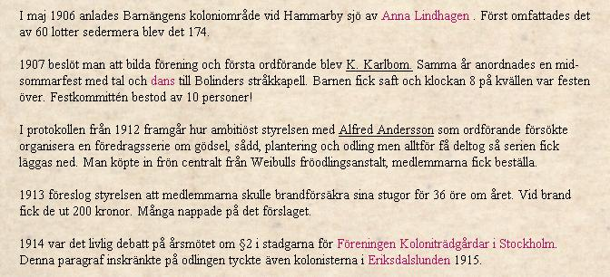
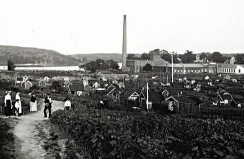
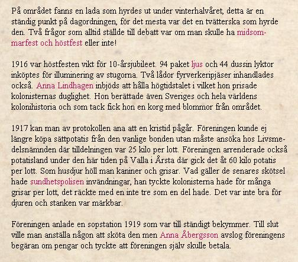
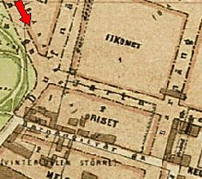
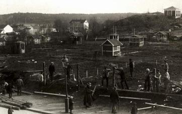
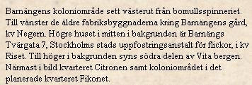
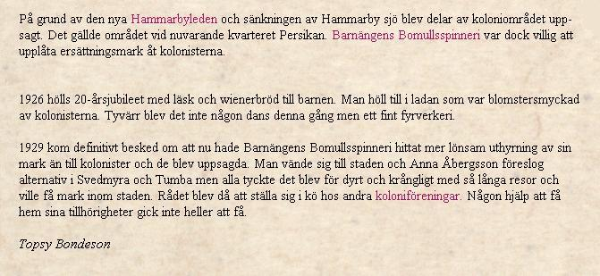
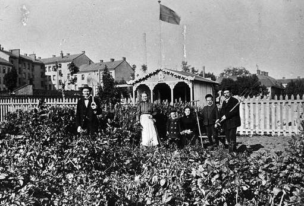

Södermalm i tid och rum. Stockholm
Barnängens koloniområde
Ur CD:n Söder i våra hjärtan








Från koloniområdet mot nordväst. Bondegatan i bakgrunden. Tottieska malmgården till höger. Idag reser sig
Sofiaskolan i blickfånget.